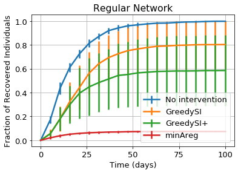
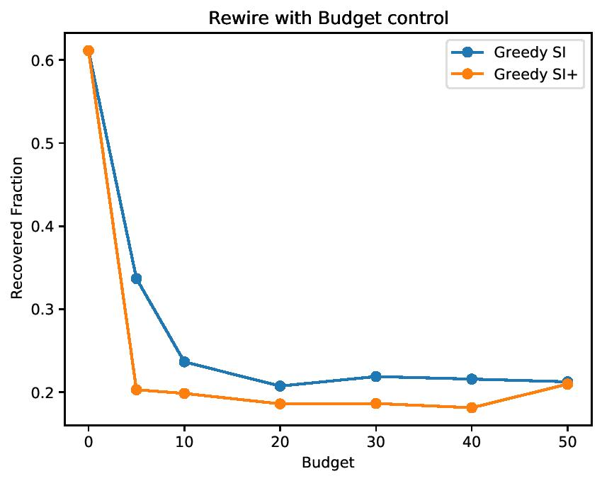
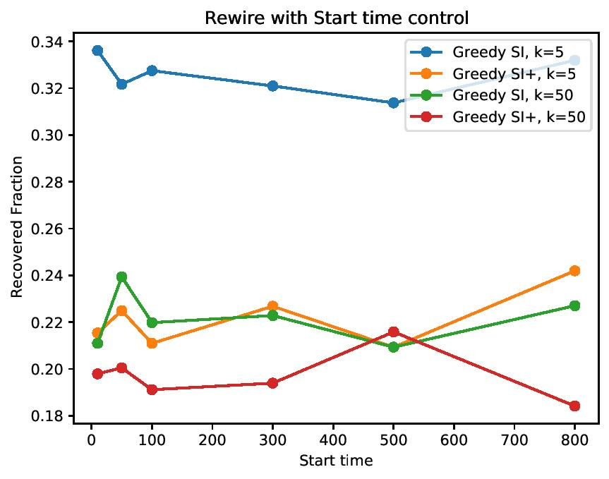

Experimental Results
Closeness to the Optimal Solution
First we run our intervention algorithms on a regular network with 100 nodes and average degree 6 with interventions, 𝛽 = 0.2/24, 𝛾 = 0.07/24. We start the simula-tion with 5% infected individuals and run the simulation 10 times. We experiment with this particular case because minAreg gives us the optimal solution and we can compare how our approximations do compared to the optimal one.
The algorithms minAreg guarantees an optimal solution because it works by exhaustively connecting I nodes to other I and R nodes and then connecting the remaining edges. For example if there are more I nodes than degree k, we can connect them with each other and we will have no SI edges without needing to make an IR edge. The problem of a degree distribution becoming unfeasible is too hard because of the regularity in the network.
There is an infinite number of budget being used here.
Limited Budgets
Final Recovered Fraction on ia-enron-only network with different intervention budget. 𝛽 =0.2/24$, 𝛾 = 0.1/24$. We start the simulation with 1 $\%$ infected individuals and run the simulation 15 times. Index 0 means no intervention. Index 60 means infinite budgets. Budgets in [0,5,10,20,30,40,50, infinite]
In this part, we compare the performance of GreedySI and GreedySI+ with controlled in variant intervention budget. The experimental result will answer question like: what is the minimum of intervention budgets needed to quickly bring down the size of an outbreak?
We present the experimental result on ia-enron-only, which is a network with 143 nodes and 623 edges, for with various intervention budgets. The results implies that for both GreedySI and GreedySI, as budgets get larger, the size of an outbreak could be further reduced. However, after the budget is larger than a certain threshold, the size of an outbreak will remain nearly unchanged.
As seen, GreedySI+ outperforms because it eliminates SI edges in a order such that the upper bound for the outbreak threshold drops significantly.
Initial Valid Time
In this part, we compare the performance of GreedySI and GreedySI+ with controlled in variant start time given a low or high budget. The experimental result will answer question like: when should we apply these algorithms in practice to minimize the size of an outbreak if given a low budget or high budget?
We present the experimental result on ia-enron-only for both low and high budget. The result implies an increasing budget for GreedySI requires an delayed intervention in order to minimize the size of an outbreak.